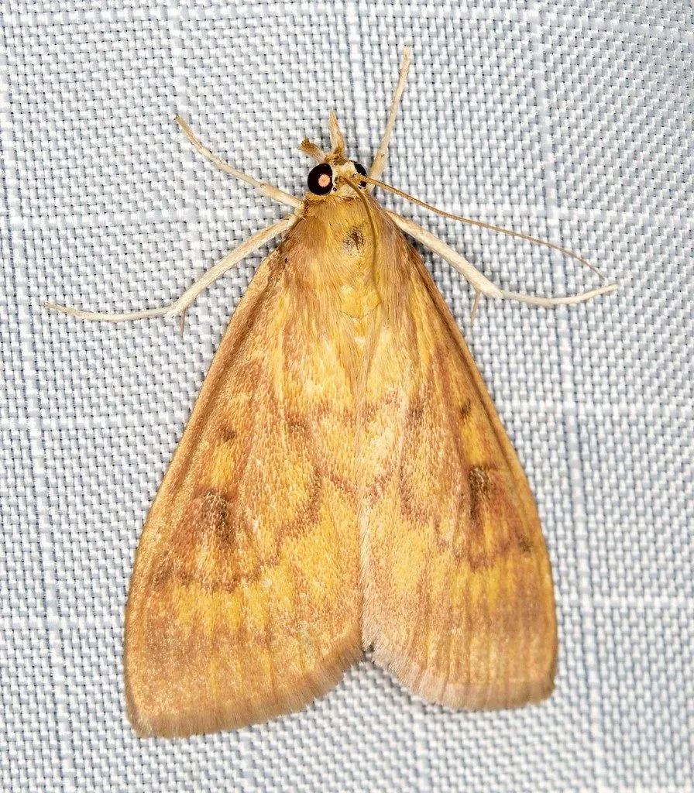

昆虫 · 动物界
玉米螟 Ostrinia furnacalis

亚洲重要的玉米害虫，幼虫蛀入茎秆和穗部取食，造成枯心和减产，分布广、危害重，是农业防治的重点对象。
- 分类
- 门节肢动物门纲昆虫纲目鳞翅目科草螟科属秆野螟属
- 栖息环境
- 玉米田及高粱、谷子等作物田，幼虫在茎秆内生活
- 地理分布
- 中国、日本、朝鲜半岛和东南亚等亚洲地区
- 保护级别
- 暂无评估；重要农业害虫
物种志
玉米螟成虫为中小型蛾，翅展约 2.5–3.5 cm，前翅浅黄褐色，有两条波浪状横线，后翅浅灰褐色；幼虫体长约 2 cm，头部黑褐色，体背有纵线，俗称玉米钻心虫。
幼虫孵化后先取食心叶，造成叶片横排穿孔，随后蛀入茎秆和穗部取食，导致茎秆折断、枯心和果穗减产。玉米螟一年发生 1–4 代，以老熟幼虫在玉米秸秆、穗轴中越冬，春季化蛹羽化，成虫有较强的趋光性。它分布于中国、日本、东南亚等地，是亚洲玉米生产上最重要的害虫之一。防治以处理越冬秸秆、释放赤眼蜂、使用生物农药和抗虫品种为主，在玉米心叶期用药效果最好，可显著减少产量损失。
形态与习性
- 食性幼虫取食玉米心叶、茎秆和穗部
- 翅展成虫约 2.5–3.5 cm，幼虫体长约 2 cm
- 生活史一年发生 1–4 代，以幼虫在秸秆中越冬
- 危害造成枯心、茎秆折断和果穗减产
- 防治处理越冬秸秆、释放赤眼蜂、使用抗虫品种
- 分布亚洲玉米产区广泛分布
趣味知识
- 玉米螟的幼虫会钻进玉米茎秆里取食，所以又叫玉米钻心虫。
- 它在玉米秸秆和穗轴里越冬，清理秸秆能显著减轻来年虫害。
- 释放赤眼蜂寄生玉米螟的卵，是常用的生物防治方法。